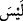
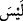

39. Bilsin ki insan için kendi çalışmasından başka bir şey yoktur.
() edatı ()’den tahfif edilmiş olup bir önceki âyetteki ( ) üzerine atfedilmiştir. () kelimesi ()’nin haberi olup (
) üzerine atfedilmiştir. () kelimesi ()’nin haberi olup ( ) cümlesi de masdariyye veya mevsûle
) cümlesi de masdariyye veya mevsûle
cümlesi olarak onun ismidir.
“Sa’y” kelimesi koşmanın bir derece altındaki “hızlı yürüyüş” anlamına geldiği gibi
“hayırlı veya şerli bir iş için sarfedilen gayret” mânâsında da kullanılır. Âyetin mânâsı
şudur: “Dikkat ediniz! Âhirette insan için ancak dünyadaki amel ve niyetinin gayreti
kadar bir karşılık vardır. Yâni nasıl ki bir kimse başkasının günahı sebebiyle hesaba
çekilmiyorsa, aynı şekilde onun fiili sebebiyle de mükâfâtlandırılmaz.” takdirindedir.
Binâenaleyh bu âyet, (bir önceki âyette bulunan) insanın kendine gelecek zararı
başkasına yüklemek suretiyle menfaat sağlamasının mümkün olmayacağı gibi,
başkasının ameliyle de kendisine bir fayda sağlayamayacağını beyân etmektedir. Âyetin
zâhirî anlamı, bir kimsenin amelinin başka bir kimseye faydası olamayacağı şeklinde ise
de bu husûsun te’vîlinde ulemâ ihtilaf etmiştir.
İbn Abbâs (r.anhuma)’dan rivâyet edilmiştir ki: “İnsan başkasının gayreti ve ameli ile
sevap kazanamaz. Bu âyetin hükmü “Zürriyyetlerini de kendilerine katmışızdır.” (et-
Tur 52/21) âyetiyle şerîatımızda mensuhtur. Çocuklar babalarının sâlih olmasıyla
cennete girerler. Kıyâmet gününde küçük çocuğun sevabı babasının terazisine konur ve
Allah bu çocukları babalarına, babaları da çocuklarına şefâatçi kılar. Ayrıca
“Babalarınız ve oğullarınızdan hangisinin fayda bakımından size daha yakın
olduğunu bilmezsiniz.” (en-Nisa 4/11) âyet-i kerîmesi de bu görüşe delâlet
etmektedir.”
İkrime (r.a.) de şöyle der: “Herkese çalıştığı kadar karşılık verilmesi, İbrahim (a.s.)
ve Musa (a.s.)’ın kavmi için söz konusu idi. Bu ümmet-i Muhammed’e gelince, onlar
hem
kendilerinin
hem
de
başkalarının
kendileri
için
olan
sa’ylerinden
yararlanacaklardır. Bir kadın çocuğunu mahfesinden yukarı kaldırarak: “Ey Allah’ın
Rasülü! Bunun haccı olur mu?” diye sorunca Nebi (s.a.): “Evet olur ve sen de onun
sebebiyle ecir alırsın” buyurmuşlardır. Yine adamın biri Nebi (s.a.)’e: “Annem ânîden
vefat etti. Şâyet ben onun için tasaddukta bulunsam ona ecir yazılır mı?” dediğinde
“Evet” karşılığını vermiştir.”[115]
Rebî b. Enes (r.a.) de şöyle demiştir: “() âyetinde zikrolunan
“insan”dan murad kâfirdir. Mü’min için ise hem kendi çalıştığı ve hem de başkasının
onun için yaptığı şeylerin karşılığı vardır. Pek çok hadis bu görüşe delâlet etmekle
birlikte aşağıda rivâyet olunan mü’min bir kimsenin, kendisi dışında birinin onun lehine
yaptığı sâlih amelin sevâbına nâil olacağı husûsundaki Hz. Aişe (r.anha) ile ilgili hâdise
bunu te’yid eder. Rivâyete göre Hz. Aişe (r.anha) kardeşi Abdurrahman (r.a.)’ın